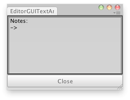

EditorGUI.TextArea
Parameters
| position | Rectangle on the screen to use for the text field. | |
| text | The text to edit. | |
| style | Optional GUIStyle. |
Returns
string The text entered by the user.
Description 描述
Makes a text area.
This works just like GUI.TextArea, but correctly responds to select all, copy, paste etc. in the editor.

Text Area in an Editor Window.
using UnityEngine; using UnityEditor;
// Create a window where you can have notes // This doesnt preserve the notes between sessions. // // check EditorPrefs Get/SetString to save the notes.
class EditorGUITextArea : EditorWindow { string note = "Notes:\n->";
[MenuItem("Examples/Notes")] static void Init() { EditorWindow window = GetWindow<EditorGUITextArea>(); window.position = new Rect(0, 0, 350, 70); window.Show(); }
void OnGUI() { note = EditorGUI.TextArea(new Rect(3, 3, position.width - 6, position.height - 35), note); if (GUI.Button(new Rect(0, position.height - 30, position.width, 25), "Close")) { this.Close(); } } }